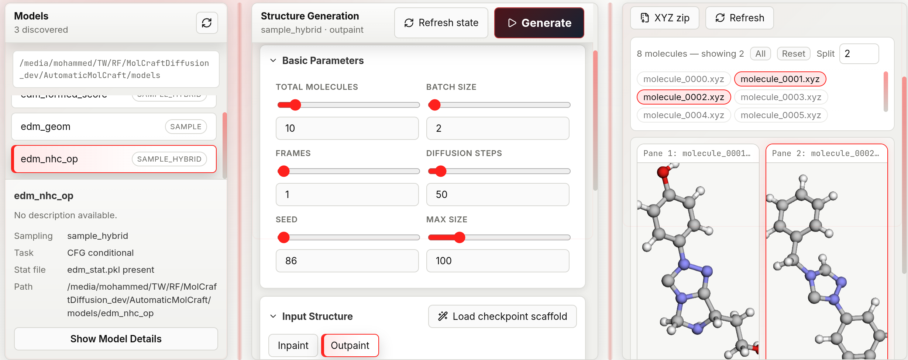

De-novo Generation¶
De-novo generation produces 3D molecular structures from random noise — no reference structure is needed. The model runs the reverse of the diffusion process (noise → molecule) using the distribution it learned during training.
Layout¶
The tab has three resizable columns. Drag the vertical dividers to adjust their widths.
| Column | Contents |
|---|---|
| Models (left) | Checkpoint list, model metadata, training-distribution histograms |
| Generation (centre) | Parameter controls, presets bar |
| Results (right) | Job status, live log, molecule viewer, download buttons |

The generation workspace exposes model selection, sampling parameters, conditional-generation controls, job execution, generated-structure inspection, and registration of generated molecules for downstream curation and analysis.
Workflow¶
1. Select a model¶
The Models panel lists every folder containing edm_chem.pkl found in MOLCRAFT_MODELS_DIR. The grey path below the list shows where the app is searching.
- A model badge showing CFG means it was trained with property labels and supports conditional generation.
- A badge showing Unconditional means it generates freely with no property steering.
Click Show Model Details to inspect: - Architecture name and parameter count - All training hyperparameters - Training-set property distributions as mini histograms — click Expand on any histogram to see a full-size chart with axis ticks. These distributions tell you what property ranges the model has seen, which helps you choose realistic CFG targets.
2. Configure parameters¶
See the parameter reference below.
3. Run¶
Click Generate (top-right of the centre panel) or press Shift+Enter.
The Results panel shows a status badge: queued → running → completed (or failed). The log tail updates every 2 seconds. You can click Stop (square icon) to cancel a running job.
4. Inspect results¶
When molecules are ready, their filenames appear as pills in the results list:
- Click a pill to load that molecule into the viewer pane.
- Split (dropdown, 1–9): set how many panes are shown side-by-side.
- All button: load the first 9 molecules at once.
- Reset button: clear all displayed molecules.
In each pane:
- Rotate: left-click drag · Zoom: scroll wheel
- Toggle between 3D and Denoising (appears only if Frames > 1)
5. Download¶
| Button | Output |
|---|---|
| XYZ | Single molecule coordinate file |
| SVG | Server-rendered 3D projection via xyzrender (must be installed and on the backend's PATH) |
| XYZ zip | All molecules from the job in one archive |
6. Send to structure-guided generation¶
With a molecule selected in a pane, click → Use as ref to load that XYZ directly as a scaffold in the Structure-directed generation tab.
Parameter reference¶
Basic parameters¶
| Parameter | Default | Range | Chemical meaning |
|---|---|---|---|
| Total molecules | 1 | ≥ 1 | Number of independent XYZ files produced in this job. Must be strictly greater than Batch size — raising Batch size above it bumps Total molecules up automatically |
| Batch size | 1 | 1–256 | How many molecules are sampled in a single forward pass through the diffusion model. Larger batches are faster per molecule but use more GPU memory. Must be strictly lower than Total molecules |
| Frames | 1 | 1–100 | Number of trajectory snapshots captured during denoising. Set to 1 to save only the final structure (fastest). Set > 1 to enable step-by-step denoising playback. Must be strictly lower than Diffusion steps — it is clamped down automatically at submit time |
| Diffusion steps | 50 | 2–1 000 | Number of denoising steps. More steps produce smoother, higher-quality geometries at the cost of run time. For quick exploration 20–50 is sufficient; for final structures 100–200 is typical |
| Seed | 86 | 0–999 999 | Random seed for reproducibility. Change it to sample a different region of chemical space with the same settings |
| Sampler | ddpm | ddpm / ddim | Diffusion sampler. Only shown for Unconditional models — CFG models are always forced onto DDPM because DDIM is unavailable on the CFG/gradient-guidance sampling path |
Molecular size¶
Three modes control how many atoms each generated molecule has:
| Mode | Parameters | When to use |
|---|---|---|
| random | (none) | Sample atom count from the training distribution — the most diverse option |
| fixed | Fixed atom count (1–512) | Force every molecule to have exactly this many heavy atoms |
| range | Min (1–512) + Max (1–512) | Sample atom count uniformly within the specified window |
In random mode, the Max size field (visible in Basic Parameters) acts as a global upper cap on atom count regardless of what the model might sample.
Conditional targets (CFG models only)¶
CFG scale (0–5, step 0.1, default 1): controls how strongly the model steers toward the specified property targets.
- 0: equivalent to unconditional generation — property targets are ignored entirely.
- 1: mild guidance; the model balances diversity with property steering.
- 2–5: stronger guidance; output properties are closer to the targets but structural diversity decreases. Values above 3 can produce geometrically strained structures.
CFG scale schedule (constant / linear / exponential / cosine, default constant): how CFG scale varies across the denoising trajectory instead of staying fixed at the value above. constant keeps CFG scale fixed for every step; the other options ramp it up or down according to the named curve.
Guidance quality trade-off
Increasing CFG scale strengthens property steering but typically reduces the fraction of generated structures that pass geometric validity checks (e.g. PoseBuster). This trade-off is sensitive to how the model was trained: models with MAD-normalized property targets tend to retain higher structural quality at equivalent CFG strengths compared to models trained with fixed-scale normalization. Check the training-set property histograms (visible in Show Model Details) to choose a realistic target value — requesting a property far outside the training distribution reduces both guidance effectiveness and structural quality.
For each property the model was trained with:
| Field | Range | Description |
|---|---|---|
| Target | −20 to 20 | The property value to steer toward. Check the training-set histogram to see realistic values for this model |
| Negative | −20 to 20 (or −) |
A contrastive target to steer away from — the model maximises the difference between target and negative. Type − to leave it unset |
Constraint: all properties must either all have a negative target set or all have it unset. Mixed configuration is rejected at submission time.
Denoising trajectory playback¶
When Frames > 1, each result pane shows a 3D / Denoising toggle.
- 3D: shows the final generated geometry.
- Denoising: plays back the full reverse-diffusion trajectory as an animated GIF — each frame is one captured denoising step, letting you observe how the point cloud collapses from noise into a molecule.
The GIF is rendered server-side; a "Rendering…" message appears while it loads.
Configuration presets¶
See Presets — save and restore the full parameter state for any generation configuration.
Resetting generation state¶
Click Refresh state to reset every generation parameter back to its default, clear the current job and results from view, and re-fetch the model list from MOLCRAFT_MODELS_DIR. Use it after adding or removing a model folder on disk, or to start a fresh configuration without reloading the page. It does not reload a past job's results — those stay available only through the Results panel of the run that produced them, or by re-selecting the model.